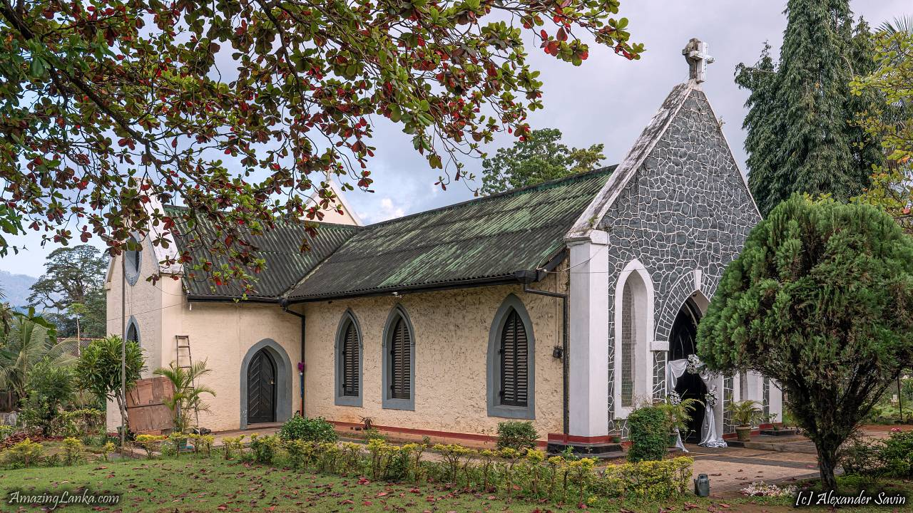

The grand cathedral of Negombo, a stunning example of neoclassical architecture and spiritual heritage.
St. Mary's Church is one of the most significant landmarks in Negombo, earning the city its nickname "Little Rome" due to its rich Catholic heritage. This magnificent church, built over a century ago, is a testament to the enduring faith of the local community.
The interior of the church is a masterpiece of religious art, featuring a series of breathtaking ceiling paintings depicting scenes from the life of Christ, crafted by a local artist. The grand neoclassical facade and the intricate woodwork within make it a place of both stunning architectural beauty and quiet spiritual reflection.
Back to Negombo Hub